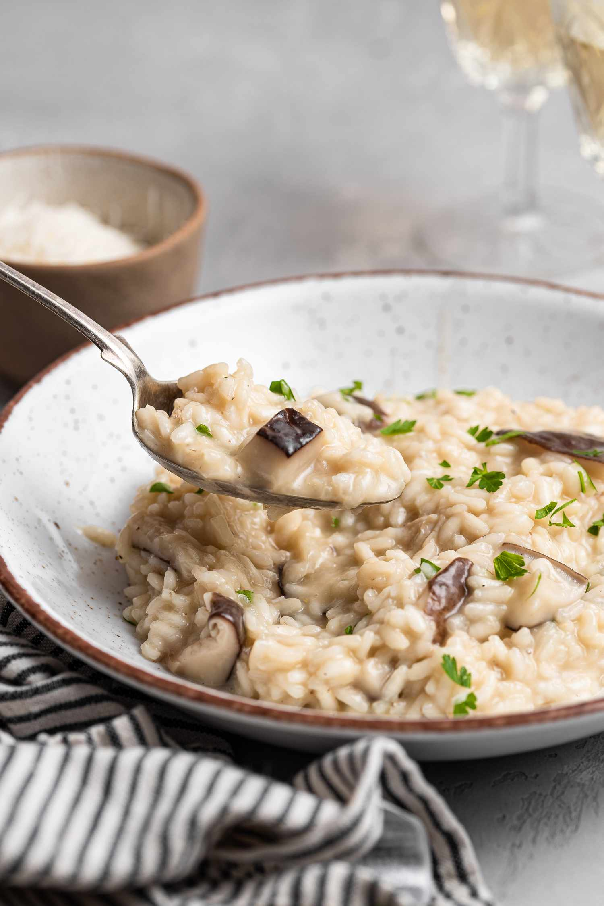

Mushroom Risotto

Description
This is a really easy mushroom risotto recipe.
Ingredients
- 2 tablespoon butter or other vegan butter substitute
- 1 medium onion, finely diced
- 2 cloves garlic, finely minced or pressed
- 1 tablespoon fresh lemon juice
- 1 teaspoon chopped fresh thyme (dried thyme also works)
- a pinch or two of salt and pepper
- 1/4 cup white wine
- 1 cup arborio rice (also called risotto rice)
- 1 1/2 cups chopped white mushrooms
- 4 cups hot chicken or vegetable stock
- fresh parsley or thyme and Parmesan cheese for garnish
Steps
- Heat a large skillet over medium heat and add the butter.
- Once the butter is melted, add the onion and garlic and sauté until the onion is soft and translucent.
- Add the lemon juice, thyme and salt and pepper.
- Add the wine and stir as the wine reduces (cook for about 5 minutes until the wine reduces).
- Turn the heat to medium-low and add the rice. Toss the rice in the onion mixture until it's coated and move it around the pan for about 1 minute.
- Stir in the mushrooms.
- Add the hot chicken stock (or vegetable stock) about 1/2 cup at a time, stirring constantly and waiting until the stock is absorbed by the rice until you add another 1/2 cup.
- Repeat the process above until all the stock has been added and absorbed by the rice and a creamy sauce has formed, stirring constantly throughout.
- Serve immediately with shaved Parmesan cheese and freshly chopped thyme or parsley.